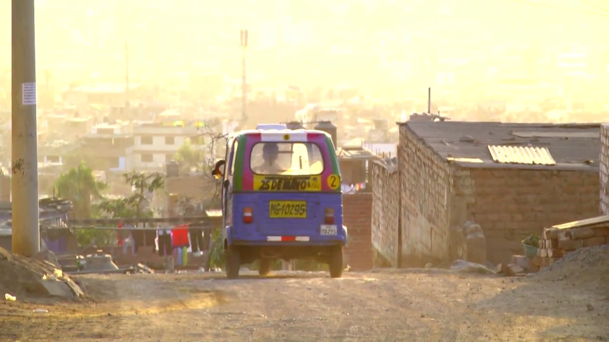
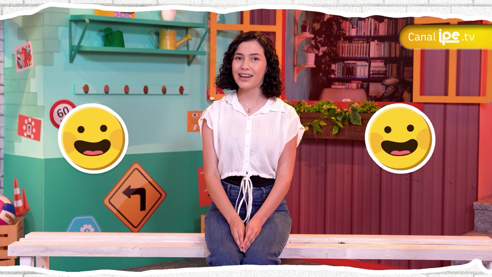

imagenCampaña institucional
Campaña "Color Lima"
Selección de proyectos en producción audiovisual, contenido digital y comunicación transmedia.
Una muestra del trabajo desarrollado desde el IRTP y en proyectos independientes. Cada tarjeta enlaza directamente al proyecto en Behance. Para ver el catálogo completo, visita mi perfil en Behance.

imagenCampaña institucional
Campaña "Color Lima"

imagenCampaña institucional
¡Vamos a Vacunarnos!
Campaña institucional
Concurso Nacional de Marinera
Contenido digital
Mi hermana y sus libros
Contenido digital
Barrio amigo
Serie educativa
Aprendiendo en Lenguas Originarias
Contenido digital
Hablemos de...
Proyecto experimental
Y Dicen
Campaña institucional
Día de la Niña 2018
Proyecto documental
Día de la Fotografía en Cantagallo
Proyecto experimental
45"
Caso de estudio
Producción audiovisual multiplataforma para la preservación y difusión de cuatro lenguas originarias del Perú.
Contexto
El Perú reconoce 48 lenguas originarias, de las cuales solo un puñado cuenta con presencia sostenida en medios masivos...
El proyecto
La serie propuso un formato educativo donde cada episodio presentaba vocabulario, frases cotidianas y contextos culturales...
Mi contribución
Dirigí los episodios audiovisuales y coordiné los contenidos digitales para las plataformas del IRTP...
Por qué importa
La producción de contenidos en lenguas originarias dentro de medios públicos plantea preguntas concretas sobre representación...